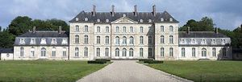
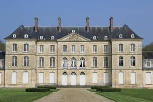
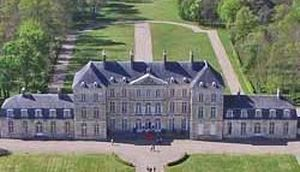

Recensement Jean-Claude Truffet



| Département | 80 — Somme |
| Canton | Amiens |
| Commune | Bertangles |
| Type d'édifice | Château |
| Période d'origine | XVII-XVIII |
BERTANGLES, en 1611 date du mariage de Gabrielle de Glisy et de Jacques de Clermont-Tallard, famille de Clermont-Tonnerre. Bertangles est construit autour de 1730, pour Louis-Joseph de Clermont-Tonnerre, comte de Thoury. Sa conception est attribuée à Germain Louis Boffrand, ingénieur-architecte. Il est reconstruit au début du XVIIe siècle au nord-est de l'ancien manoir, après sa destruction par les Espagnols en 1597, sans doute pour Jacques de Clermont-Tallard et Gabrielle de Glisy. La terre fut érigée en marquisat par Charles X en 1829, au profit d'Amédée Marie de Clermont-Tonnerre. Le domaine, toujours transmis par successions et mariages, n'a jamais été vendu. La demeure est complétée dans le deuxième quart du XIXe siècle, par de nouveaux communs et par des aménagements paysagers, un parc à l'anglaise signalé par A. Goze (1849) et par la pose d'un portail, acquis en 1847. La grille exécutée pour le marquis de Gouffier, par le serrurier Jean-Baptiste Veyren, établi à Corbie, était destinée au château d'Heilly. Endommagé par un incendie en août 1930, il ne conserve de son décor d'origine attribué à François Cressent, que l'escalier et sa rampe en fer forgé. Les pièces de réception et la bibliothèque ont été refaites à l'identique, de 1930 à 1934, par André Mailfert. L'aménagement du parc au milieu du XIXe siècle, d'une faisanderie et d'un enclos à chevreuils, et celui de la cour d'honneur reproduisent en partie l'aspect du XVIIIe siècle reconstitué d'après des documents authentiques par l'architecte-paysagiste Duchesne. Le château orienté nord-ouest sud-est est implanté en retrait d'une cour d'honneur. Au nord-ouest, le parc est prolongé par une avenue qui traverse le bois de Bertangles. Le corps de logis de plan allongé est formé d'un corps central à deux étages carrés et étage de comble prolongé par deux ailes basses à étage de comble couvertes de toits à pans brisés.
BERTANGLES, construit en calcaire, appareillé en pierre de taille, il est couvert d'ardoises. Le corps central présente une élévation sur cour à sept travées, dont les trois travées centrales sont couronnées par un fronton triangulaire (côté cour) et par un fronton semi-circulaire (côté parc); il est flanqué de deux pavillons en saillie à deux travées. Les corps de bâtiment délimitent une cour fermée sur trois côtés. Un portail à porte charretière et porte piétonne en briques et calcaire appareillé en pierre de taille en constitue l'entrée. Au nord-est, un portail donne accès au château. dont la façade nord sur la cour est en calcaire, appareillé en pierre de taille, située au sud de la ferme. Accolé au portail d'entrée, un bâtiment en rez-de-chaussée surélevé sur cave est construit en calcaire appareillé en pierre de taille et couvert de tuiles. Des trois portes d'origine visibles en façade sud, les deux latérales ont été murées et la porte centrale a été agrandie. Un accès latéral ouvert dans un second temps a également été muré. A l'est, s'élève un corps de bâtiment en rez-de-chaussée surélevé, construit en briques sur solin de grès et couvert d'un toit à croupe en ardoises; il présente quatre grandes fenêtres en façade sur cour, l'une d'elle a été transformée en porte, et une porte en pignon à l'est. A l'ouest du portail, la conciergerie est construite en calcaire appareillé en pierre de taille; en rez-de-chaussée, elle est couverte d'un toit en double bâtière en ardoises. Ils sont construits en briques et couverts de toits à longs pans à demi-croupe avec aisseliers et épis de faîtage. Les façades présentent un décor polychrome en assises alternées. A l'ouest. Il est couvert en tuiles.
Familles des Clermont-Tonnerre "
Bertangles: 49° 58' 21" Nord, 2° 18' 06" Est